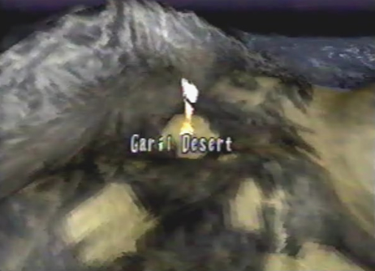

Diary Entry 32: Side Quests
Side Quest 1: The Last D Unit and the Light Wing Dragon Our first side quest was to return to Uru, to acquire the last D Unit. We found it near the Sunken Southern Ruins cave, hanging from a mushroom-like relic. Once we acquired D Unit 05, my dragon transformed into the Light Wing dragon. He seemed more powerful than ever before! With the power of all his multiple forms combined, the dragon was certainly a force to be reckoned with. I have written down the Locations of the D Units for my own reference. D-Unit Locations: D Unit 01: We found
the First D Unit above the Excavation Site, inside the secret cave
that lead to Conana's Nest. D Unit 02: We found
the second D Unit in the Valley, preferably, Canyon Deep Gulch. D Unit 03: We found
the third D Unit in the Garil Desert, found at the Worm Lair. D Unit 04: We found
the fourth D Unit in the Garil Desert at the Blue Ruins. D Unit 05: We found
the fifth D Unit at Uru, in the Sunken Southern Ruins. D Unit 06: We found
the sixth D Unit at Uru, in Deep North. D Unit 07: We found
the seventh D Unit in the Underground Ruins of Uru, B2F North. D Unit 08: We found
the eighth D Unit at the Underground Ruins of Uru, B4F. D Unit 09: We found
the ninth D Unit in the Forest of Zoah, inside the Forest of Zoah. D Unit 10: We found
the tenth D Unit in the Forest of Zoah, also inside the Forest of
Zoah. D Unit 11: We found
the eleventh D Unit in the Tower, 14F North. D Unit 12: We found the twelfth D Unit in the Tower, 14F North.
Side Quest 2: The Sunken Ship in the Garil Desert My Dragon had grown considerably strong. His laser rank was now at level 6, so we went back to the Garil Desert to try and destroy the ancient ship, that was buried in the sand. The dragon succeeded, and proceeded to enter the ship. At the end of the sunken ship's passage, we acquired an ancient technique called "Plasma Swarm."
Side Quest 3: Dragon Pup Item Retrieval Now that the dragon pup had full trust in me, he was a big help in acquiring items for the dragon and I. Back at the "Above Excavation Site," we played a game of dragon pup fetch. As we flew throughout the area, the little guy flew high into the sky, looking for items. We flew ahead of him, to leave him to his search, and returned shortly after. The dragon locked-on to him and acquired the item he had found. The dragon pup found multiple items. Here is the list of items he found: 1. Elixir
Medis X 1 Unfortunately, after the dragon pup acquired these items from the "Above Excavation Site," he couldn't get any more items from places such as: the Valley, the Garil Desert, Uru, or the Forest of Zoah. But the twenty items he did get, helped us out greatly.
Side Quest 4: Destroying the Albertson Fans at Excavation Site # 4 We decided to return to Excavation site # 4, to have ourselves a little fun. To test out the dragon's new laser level, we destroyed all of the gigantic fans. It was a blast! Strangely, we also received items from these fans.
Side Quest 5: Azel's Reflection of the Past I decided to bring Azel to the Excavation Site, where Craymen found her, one last time. When we arrived, she quickly ran ahead of me. She stood there reflecting on the past. She said before Craymen woke her, she saw many places with Atolm, but never walked the land. She was also still afraid of the Tower, but said she couldn't be afraid forever. She needed to know what truly happened, and we would surely find the answer.
Side Quest 6: Kou's Offer I decided to return to the caravan to say good-bye to everyone, and to check up on Fei and Eknak. Eknak was as lively as ever, completely recovered from Meccania Fever. His father An'jou, had found an airship that had recently crashed. Feelings of fear began to cross my mind, as I realized it was Bezer's ship. That fear turned to sadness, as I learned from Kou, that Bezer didn't survive the crash. Upon talking to Kou for a while, she eventually made a most striking offer. She asked me if I would like to take Fei's hand in marriage! I was speechless! I didn't know what to say. She asked me to think it over. Maybe I would choose to settle down, after my journey had ended. Before leaving, Fei told me she would be waiting for me. Side Quest 7: The Villatuya Fruit and the Battles Against the Golia Hunter and Golia Tracker We returned to the Forest of Zoah, and discovered a Villatuya plant. It looked similar to the Kuo plants, we had found in the Garil Desert. The plant was found to the far north. It was bright blue and gave off a strange yellow fruit. The dragon ate this fruit right away, and while performing a role, his speed increased to an even greater extent. After getting the Villatuya fruit, we were ambushed by creatures called Golia Hunters, and Golia Trackers. The Golia Tracker attacked us while flying near the three Naga Cocoons, found around the lower portion of the area. The Golia Hunter attacked us while flying past a patch of vegetation, located to the center of the three Naga Cocoons. These creatures nearly took our lives and I'm glad to be standing here today, to tell my story.
Final Side Quest: The Legendary Blue Dragon: Solowing Inside the Forest of Zoah, the dragon was able to enter that strange locked door. This door lead us to a place called the Red Ruins. Directly in front of us, was the shrine Rhagg and Perez were talking about, back at the Seekers' Stronghold. We activated four rotating artifacts surrounding the gigantic central shrine, that in turn, opened corresponding doors. We first entered the southern door, to find a white relic. We proceeded to destroy it. Next, we entered the eastern door, and destroyed another white relic. Destroying this relic, caused a giant, central, white ruin, to rise upward. We passed through this ruin only to find it brought us to the Garil Desert, at night. The desert was silent and peaceful. There was nothing more to see, so we went back to the Red Ruins. This time, we explored the northwestern chamber. Found within this chamber, was an empty pedestal. I placed the dragon crest we had received from inside Shellcoof on this pedestal, and to my amazement, the baby dragon pup merged with the crest and my dragon! This turned my dragon into the legendary blue dragon, Solowing! My dragon's voice echoed, "Now my soul is complete, my name is Lagi." With all of our side quests completed, we departed for the Tower. We would have to face Sestren in the final battle, to free mankind from the will of the Ancients. Sestren would now have to face Winged Death! |
|
| Divine
Overview |
| Side Quest 1: The Last D Unit and the Light Wing Dragon 1. Return to Uru, we are going to get the last D Unit. |
2. D Unit 05 can be found right near the cave, hanging from a mushroom-like object. Lock-on and acquire it. |
|
3. Upon receiving the last D Unit, your dragon will transform into the Light Wing Dragon! It has the power of all your dragon forms! In case you missed any D Units, here are their locations: D Unit 01:
Above Excavation Site (Conana's Nest) |
| Side Quest 2: The Sunken Ship and the Extra Berserk Technique Plasma Swarm  1. Return to the Garil Desert: Worm Lair. |
| 2. Lock-on to the sunken ship and fire your lasers. |
2. The ship will explode, revealing an opening that leads inside. Enter the ship. |
3. You will find yourself in the Sunken Ship Passage. Follow the passage to the end to receive the extra berserk technique, Plasma Swarm. |
| Side Quest 3: Dragon Pup Item Retrieval 1. Return to the Above Excavation Site. It's time to put the dragon pup to good use! |
2. Now that the dragon pup trusts you, we are going to play a little game of dragon pup fetch. The dragon pup can fly above the screen and find items for you! |
3. Here's how it works. Fly around the Above Excavation Site, until the dragon pup flies ahead of you, ascends upward, and out of view. |
| 4. Next, fly away from the location where the dragon pup flew upward, only for a short while. Now, turn around and fly back to the dragon pup's location, and lock-on to the little guy. |
|
5. The item he found will be yours for the taking! Here is the complete list of items the dragon pup can find: Dragon Pup Item Retrieval List 1. Elixir
Medis X 1 Note, These very same items can also be found in the Valley, Garil Desert, Uru, and the Forest of Zoah. Unfortunately, you can only get the complete list once, in one of the places mentioned above. Pick a place, and collect all the items! |
| Side Quest 4: Destroying the Albertson Fans at Excavation Site # 4 1. Return to the Valley: Excavation Site # 4. It's time to destroy some giant fans! |
| 2. With a laser rank of level 6, you will now be able to destroy the giant Albertson Fans. Destroying them will also give you a few items. |
| Side Quest 5: Bring Azel to the Excavation Site 1. Return to the Excavation Site with Azel. |
2. When you arrive, you'll find Azel standing in the distance, reflecting on the past. Have a conversation with her. |
| Side Quest 6: Kou's Marriage Offer 1. Return to the Caravan for a humorous conversation between Edge and Fei's mother, Kou. |
| 2. Enter Fei and Kou's tent, and talk to Kou multiple times. She will eventually ask you to take Fei's hand in marriage! Edge will be speechless. When you talk to Fei she'll say, " I'll be... waiting for you..." See, the Palmer Amulet quest paid off, didn't it?! |
| Side Quest 7: The Villatuya Fruit and the Battles Against the Golia Hunter and Golia Tracker 1. Return to the Forest of Zoah, to take care of some unfinished business. |
2. You can now acquire the Villatuya Fruit. It's found due north from where you begin, on a large patch of vegetation. Lock-on to the blue plant and acquire the strange fruit. When flying, press the R button to perform a roll, your speed will increase to its maximum velocity! The exact location of the Villatuya Fruit can be found on the map. |
| 3. You can also fight a couple of rare enemies. The Golia Hunter (Misnamed as Golia Tracker) can be found in the middle of the three surrounding Naga Cocoons, found at the bottom half of the map. Note, if you have a Telepathy Shard, your radar will turn yellow when your over the spot. View the Hostile Enemies Section, to find out how to take it down. |
4. The Golia Tracker (Misnamed as Golia Hunter) can be found around any of the three Naga Cocoons, found at the bottom half of the map. They are the very same Cocoons that surround the area where you can find the Golia Hunter. Again, if you have a Telepathy Shard, your radar will turn yellow when you fly over any one of the three Naga Cocoons. View the Hostile Enemies Section, to find out how to take it down. |
| Final Side Quest: The Legendary blue Dragon: Solowing 1. With a laser rank of level 6, you can now enter that locked door, found Inside the Forest of Zoah. |
| 2. You will be inside the Red Ruins. Note, you can also enter the Red Ruins from any one of the four Naga Cocoons, found around the upper portion of the map. |
| 3. Directly in front of you, you'll find that mysterious shrine that Rhagg and Perez were talking about, back at the Seekers' Stronghold. |
| 4. First, seek out the four rotating relics, and destroy them. Their locations can be found on the map. Second, enter the shrine's southern door, and destroy the white relic. Third, enter the shrine's eastern door, and destroy the second white relic. Fourth, a giant, central, white ruin, will rise upward. Fifth, enter this gigantic ruin. Last, you will arrive at the Blue Ruins during the night. Everything is silent and peaceful, but there really is nothing more to see. Return to the Red Ruins the same way you came. |
|
5. When you return to the Red Ruins, you will have four more things to do. First, enter the shrine's northern door. Notice the spinning dragon crest. Second, enter the chamber to the west. You'll find an empty pedestal, lock-on to it, and place the dragon crest you received from shellcoof, on it. Third, the dragon pup will react to the dragon crest, and amazingly, will combine with your dragon! Lastly, you will have gained the dragon's true form, Solowing. Lagi's soul is also inside the dragon once more! |
|
6. Return to the Tower for the Final battle. Sestren will now have to face Winged Death! |